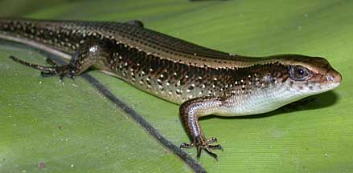
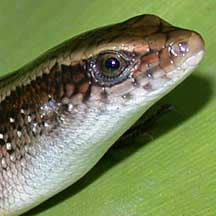
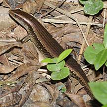
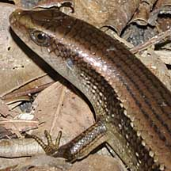
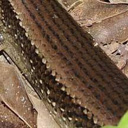

|
|
| vertebrates text index | photo index |
| Phylum Chordata > Subphylum Vertebrata > Class Reptilia |
| Common
sun skink Eutropis multifasciata Family Scincidae updated Oct 2016 Where seen? This small shiny skink is often seen slithering among the undergrowth and leaf litter in vegation near the shores. According to Baker, in Singapore it is widespread in wooded areas, mangroves and parks. It was previously known as Mabuya multifasciata. |
 |
|
|
Features: Total length
to 35cm. A long body, somewhat angular, covered with shiny, smooth
scales. It has small limbs and a long cylindrical tail. At first glance
it might resemble a short snake! Generally bronzey brown with various
patterns: black stripes down the back, sides of the body may be blackish,
with white dots or a broad orange swathe, underside of the head may
be yellow. It is also called the Many-lined sun skink. It can move
very quickly and is generally shy. What does it eat? It eats insects, spiders and even smaller lizards, generally hunting on the ground. It is active during the day. Monitor babies: Mama lizard bears 5-10 live young. |
 Sungei Buloh Wetland Reserve, May 02 |
|
 Sungei Buloh Wetland Reserve, Sep 09 |
 |
 With black stripes on the back and white dots on the sides. |
| Common sun skinks on Singapore shores |
| Photos of Common sun skinks for free download from wildsingapore flickr |
| Distribution in Singapore on this wildsingapore flickr map |
|
Links
References
|
|
|